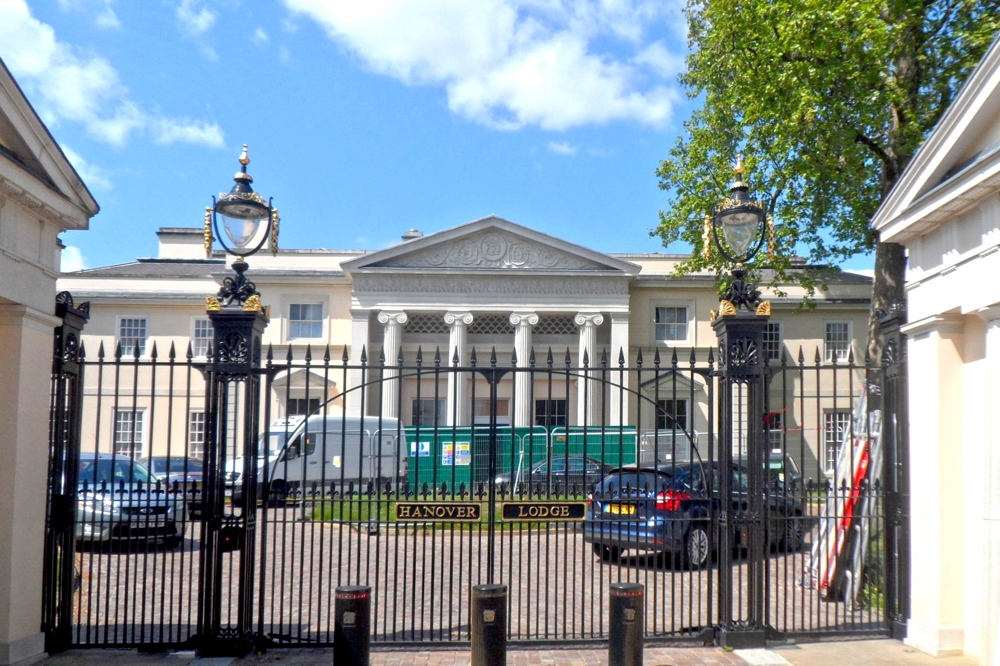

From today's featured article
Powderfinger, an Australian rock band, formed in Brisbane in 1989. From 1992 to 2010 the lineup consisted of vocalist Bernard Fanning, guitarists Darren Middleton and Ian Haug, bass guitarist John Collins and drummer Jon Coghill. The group's third studio album, Internationalist, peaked at No. 1 on the ARIA Albums Chart in September 1998. Their next studio album, Odyssey Number Five, reached number one in September 2000 and was certified eight times platinum, shipping over 560,000 units. Their next three studio albums also reached number one: Vulture Street (July 2003), Dream Days at the Hotel Existence (June 2007) and Golden Rule (November 2009). Powderfinger earned the third-highest total of ARIA Awards (18), after Silverchair and John Farnham. Their last tour, the Sunsets Farewell Tour, concluded on 13 November 2010. In November the following year, the band published a biography with Dino Scatena, a rock music journalist, called Footprints: the inside story of Australia's best loved band. (Full article...)
From today's featured article

- ... that London's Hanover Lodge (pictured) sold for £120 million in 2012, but the underground swimming pool, which converts into a ballroom, is considered "too small"?
- ... that Hans Larwin painted Soldat und Tod in 1917 when he was the official war painter for the Austria-Hungary dual monarchy?
- ... that fossils from the Paleocene period have been found near Saunders Creek, Alberta, including an upper molar from a possible pantodont?
- ... that the voice of Hawaiian soprano Nani Alapai was compared to the music of the singing snails?
- ... that a Taiwanese religious movement teaching feng shui and I Ching since 1984 now has around 300,000 members?